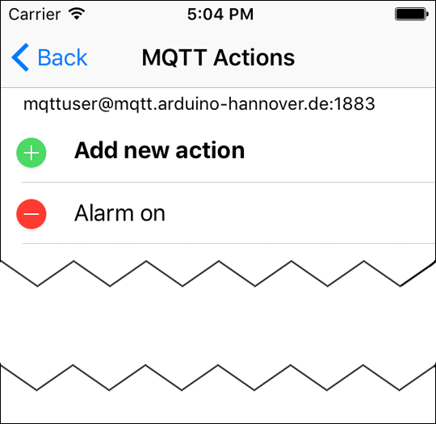
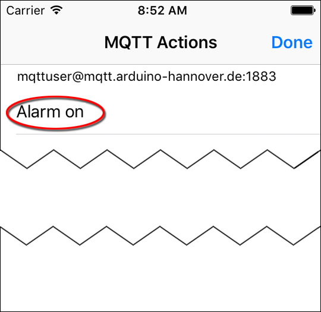

The app allows defining actions which send notifications to certain topics. It would be conceivable, for example, that the alarm system in a remote object could be switched on and off via this app.
The “Retain” option allows holding notifications. Details can be found in the MQTT server documentation.


The topic for that you define an action must already have been created. In the example above, the topic “mqttuser/Alarm1” does already exist. The action you have defined should now be listed in the “MQTT Actions” window.

